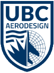
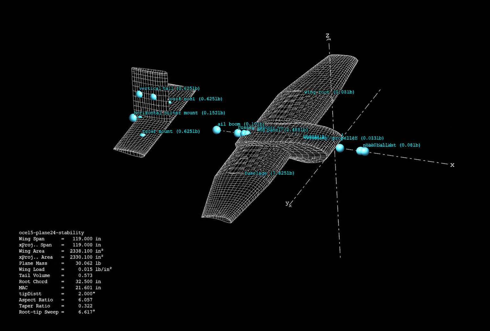
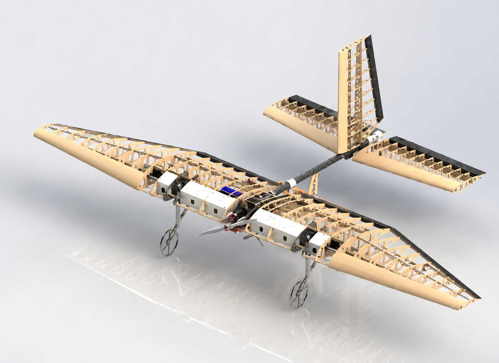
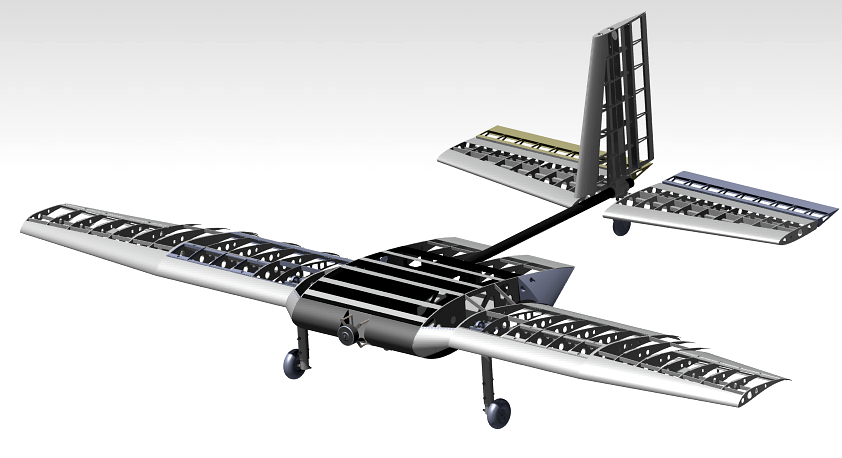
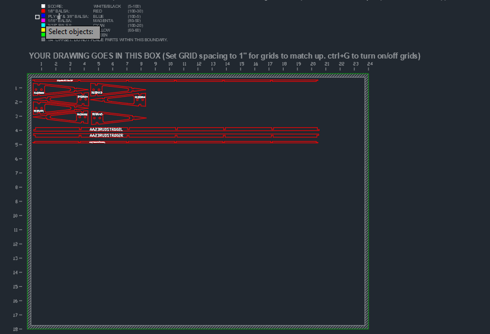
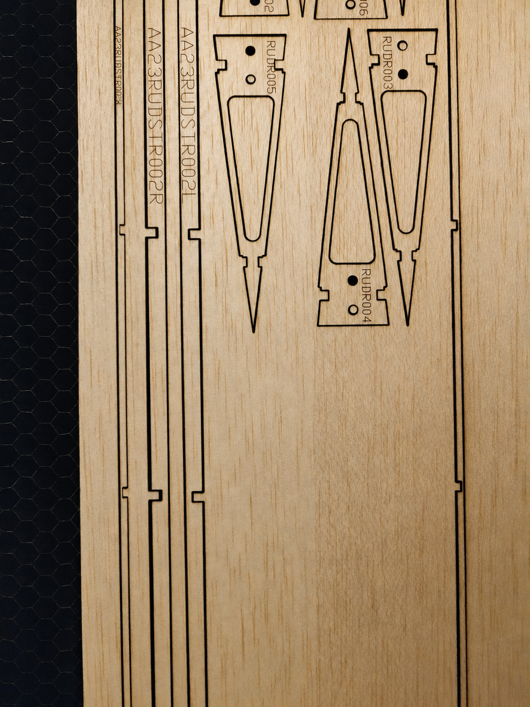
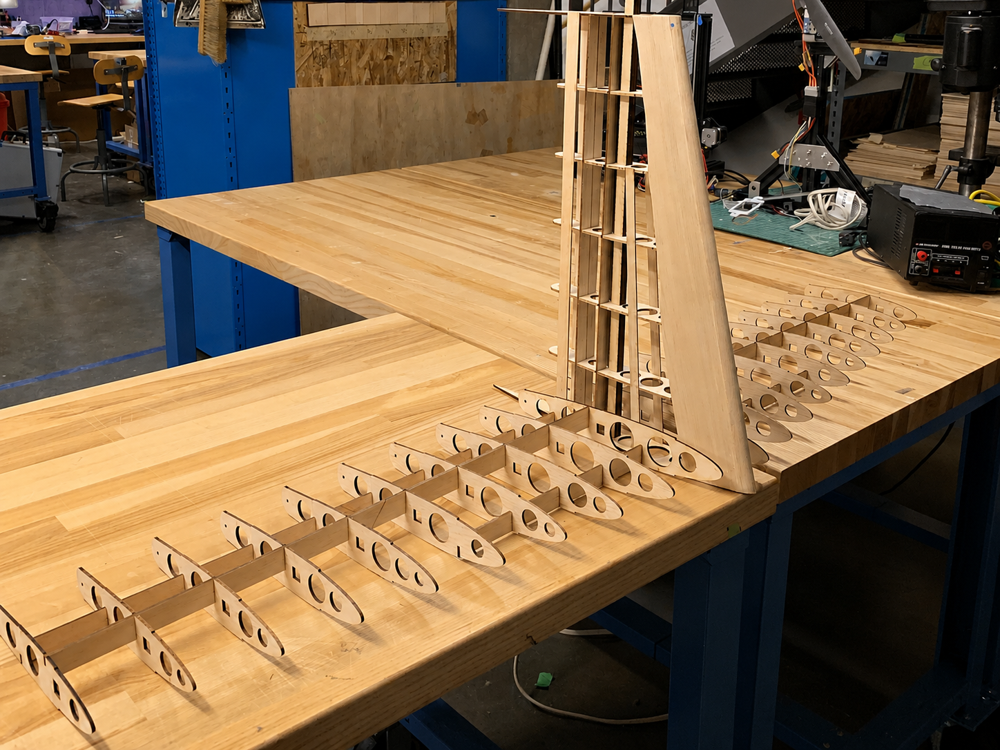

Electric Radio Controlled Aircraft

Overview
UBC AeroDesign is a student engineering design team that designs, manufactures, and flies radio-controlled fixed-wing aircraft for the annual SAE Aero Design competition. The competition compresses a full aircraft development cycle into one academic year, requiring teams to work through conceptual design, manufacturing, system integration, testing, and flight demonstration.
From 2022-2024, the Advanced Class competition followed a firefighting mission profile involving a 120-inch-wingspan payload aircraft, a PADA aircraft, and a ground transport vehicle. In 2025, the Advanced Class rules changed to focus on autonomous payload delivery and retrieval, where teams are scored on mission segments such as conventional takeoff, payload release or delivery, payload capture, and return to base.
As Co-Lead of the Advanced Airfoils subteam, I helped oversee aerodynamic analysis, CAD design, manufacturing, testing, logistics, and team coordination for the aircraft’s wing and tail systems.
Simulation
- Conducted airfoil and planform analysis in XFLR5 to optimize lift, drag, and stability.
- Compared airfoil options and selected geometry based on aerodynamic performance and aircraft requirements.
- Cross-checked analysis results with Ansys simulation and numerical methods.
- Tested prototype wings in a wind tunnel to validate aerodynamic performance.

Design
- Designed and modelled wing and tail components in CATIA and SolidWorks using DFM principles.
- Created detailed 2D drawings and DXF files for laser cutting and waterjet manufacturing.
- Integrated CAD from different team members into full aircraft assemblies.
- Checked mates, tolerances, and alignment features between fuselage, wing, tail, landing gear, and control surfaces.


Manufacturing
- Prepared DXF files in AutoCAD for laser cutting and waterjet cutting.
- Manufactured wood, carbon-fibre, and aluminum components using laser cutters, waterjet, CNC routing, and 3D printing.
- Used nesting, part labelling, and jig-based workflows to improve manufacturing efficiency and reduce assembly errors.
- Applied carbon-fibre reinforcement using CNC-machined and routed moulds to improve structural strength.


Assembly
- Assembled hundreds of lightweight aircraft components, including ribs, spars, straps, sheeting, and control surfaces.
- Maintained careful alignment during bonding to ensure proper fit and aerodynamic surface quality.
- Joined structural components using CA glue, clamps, and custom alignment fixtures.
- Applied MonoKote covering to finish the aircraft surface.

Results
- Contributed to the aircraft’s wing and tail design, manufacturing, and final assembly integration.
- Helped the team achieve 2nd place overall out of 40+ teams at the SAE Aero Design competition in 2026.
- Built hands-on experience in aerodynamic analysis, CAD integration, lightweight manufacturing, and large-team engineering collaboration.